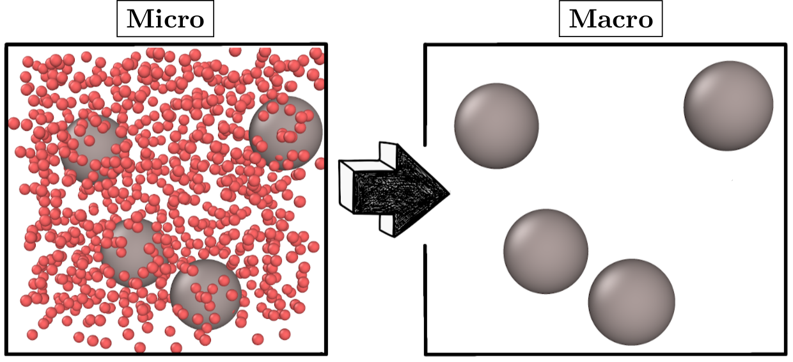

Projects
Coarse-Graining Non-Equilibrium Dynamics

Non-equilibrium systems, such as active suspensions or externally-driven particles, show phenomenology which goes far beyond equilibrium physic. Importantly, dynamical properties such as friction and memory do not only affect liquid transport in non-equilibrium systems but can also influence the emerging structural properties of liquids. I am interested, in how complex dynamical properties, such as viscoelasticity, affects collective motion of active particles, but also more abstract concepts known from equilibrium physics, including fluctuation-dissipation theorems. Specific topics and collaborators
- Fluctuation-Dissipation Theorems in Non-Equilibrium: Friederike Schmid
- Reconstructing Memory Kernels: Friederike Schmid, Martin Hanke-Bourgeois
- Active Particles in Viscoelastic Media: Ryoichi Yamamoto
Kinetic Theory of Decentralized Learning

Over the past two decades, active matter has emerged as a new central field within soft matter and statistical physics. A defining characteristic of active matter is its capacity to harness energy from its environment to facilitate self-propulsion. Despite these non-equilibrium forces, usual active matter remains inherently “dead”, lacking the capability to learn and process information and adapt to its environment beyond predetermined policies. In this project, based on kinetic theory, we introduce a novel statistical physics perspective on smart matter, which possesses the ability to dynamically adjust its policy. Specific topics and collaborators
- Kinetic Theory: Misaki Ozawa, Eric Bertin
- Robotic Experiments: Olivier Dauchot
Glass Transition

- Machine-Learning Glasses: Ludovic Berthier, Giulio Biroli
- Mode-Coupling Theory for Confined Glasses: Thomas Franosch
Confinement

- Mode-Coupling Theory for Confined Glasses and Liquids in Extreme Confinement: Thomas Franosch
- Confinement-Induced Crystallization: Charlotte Petersen
- Colloids in Confinement (Confocal Microscopy): Stefan Egelhaaf and Alejandro Villada-Balbuena
- Slip and Yielding in Confined Soft Glasses: Suzanne Fielding